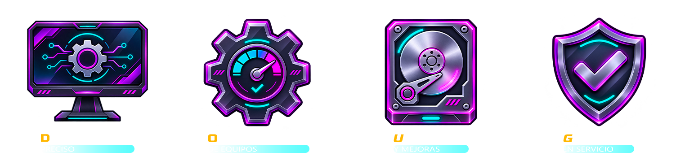

Reparamos, optimizamos y mejoramos tu PC. Diagnóstico claro, trabajo prolijo y garantía en cada servicio.
Desde una falla puntual hasta una máquina pensada para jugar o trabajar sin cortes.

Encontramos la causa real de la falla antes de tocar nada, y te explicamos qué pasa.
Limpieza, configuración y ajustes para que tu PC responda mejor día a día.
Más memoria, almacenamiento más rápido o componentes nuevos según lo que necesites.
Cada trabajo tiene respaldo. Si algo vuelve a fallar por nuestro trabajo, lo resolvemos.
Consejos para cuidar tu equipo.
Trabajos y opiniones de quienes ya confiaron en GFIX.
Escribinos o pasá por el local.